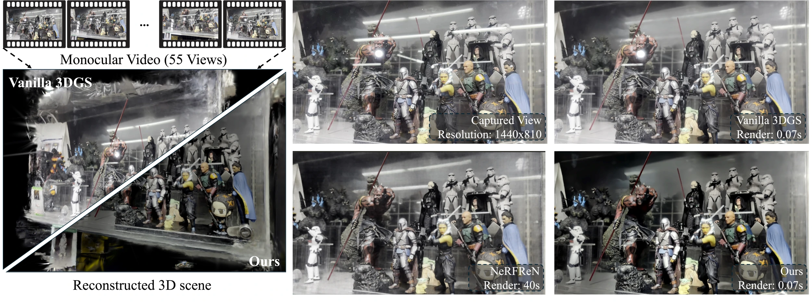
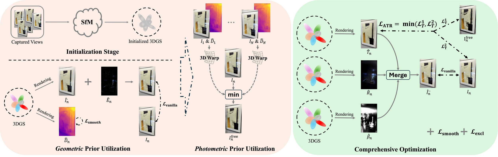
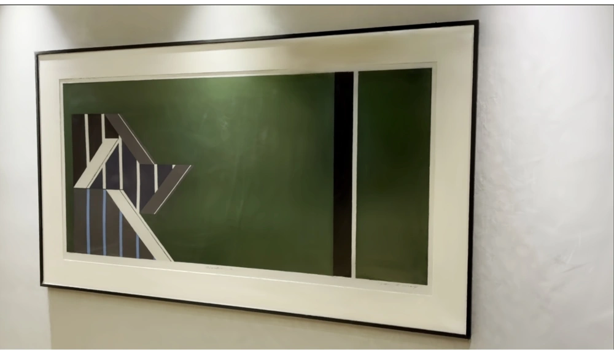
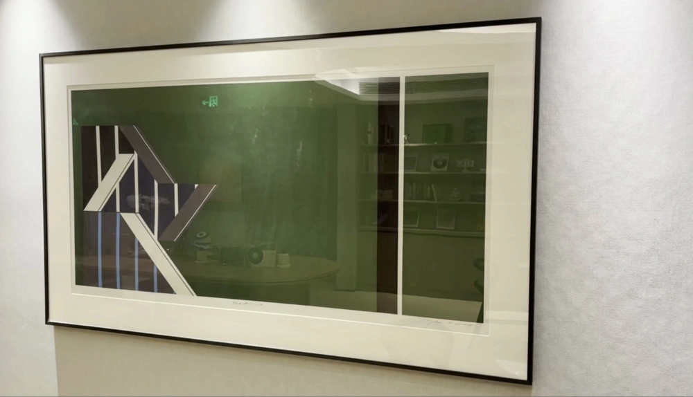
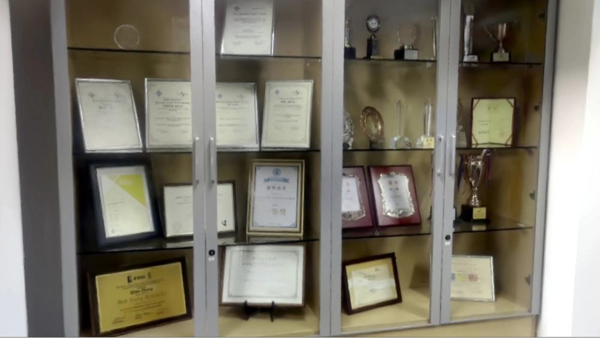
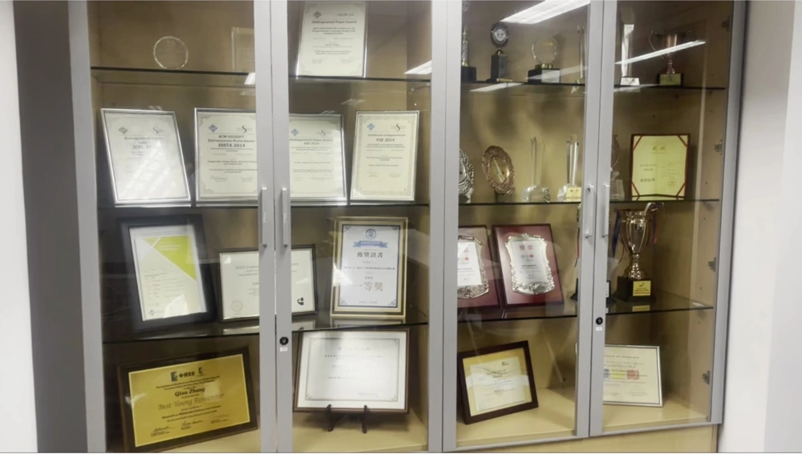
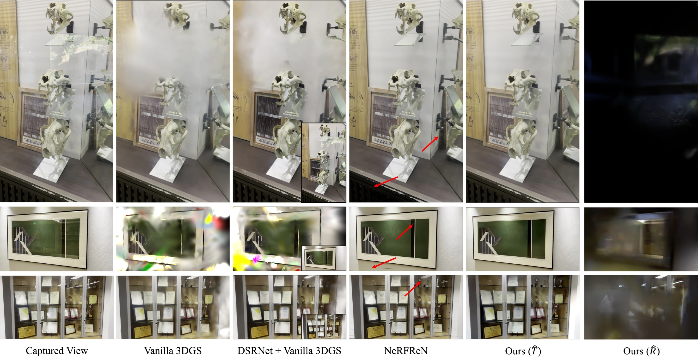
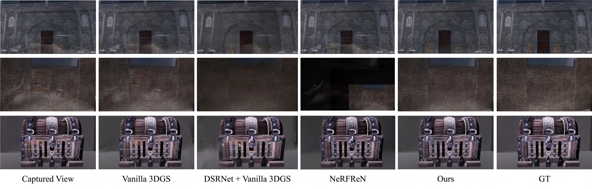

Geometric self-prior
A depth-smoothness prior and learnable residual maps guide the initial 3DGS optimization toward coarse transmission geometry.
Reflection-free novel-view synthesis from a monocular sRGB video

Ongoing experiments. Transmission and color refinement, angular/facade studies, and an ATR-guided student are being explored on Superpod. These experiments are separate from the paper results and the public baseline.
Internal baseline maintenance. The live baseline documents zero-safe exclusion gradients, removal of redundant loss work, and complete layered checkpoint/RNG restoration. Historical pixel sampling remains the default; corrected pixel-center sampling is opt-in. These changes are not present in the initial GitHub import.
Public code import. The original 013_AllStage_Real implementation is available on GitHub, including training, warping, and rendering scripts.
Update dates use Hong Kong time. Public snapshot checked on 25 November 2026: 00e7b56. Internal updates describe development progress, not a tagged public release.
3D reflection removal is crucial for applications requiring high-fidelity visualization, such as museum exhibitions. We present Reflection-Free 3D Gaussian Splatting (RF3DGS), which exploits a photometric prior: the minimum pixel intensity across multiple views of the same 3D point strongly correlates with reflection-free information.
RF3DGS first optimizes a 3DGS model with a geometric prior to estimate coarse reflection-free depth. Depth-based 3D warping then aggregates information from auxiliary views to construct transmission pseudo-labels. An Adaptive Twin Rendering (ATR) loss combines these self-supervised signals with the original observations to preserve high-frequency detail. We evaluate on synthetic and real-world scenes and introduce a Unity-based benchmark containing 45 cases.
From multi-view observations to self-priors and reflection-free rendering.

A depth-smoothness prior and learnable residual maps guide the initial 3DGS optimization toward coarse transmission geometry.
Depth-based warping aligns auxiliary views. A minimum-intensity prior aggregates preliminary clean transmission information.
Joint optimization uses the pseudo-labels and original captured views to remove reflections while preserving scene detail.
Captured views and recovered transmission. Drag the divider to compare.


Captured viewRF3DGS

Captured viewRF3DGSReal-world comparisons from the paper.

Five Unity scenes, nine configurations per scene, 45 evaluation cases.
The benchmark varies scene content, glass thickness, transparency, and reflection strength. Paired captures along the same camera trajectory provide reflection-free ground truth for quantitative evaluation.

Results reported in the current manuscript. Best values are shown in bold.
| Method | PSNR ↑ | SSIM ↑ | LPIPS ↓ |
|---|---|---|---|
| Chugunov et al. | 2.94 | 0.248 | 0.935 |
| Vanilla 3DGS | 29.58 | 0.917 | 0.175 |
| DSRNet + Vanilla 3DGS | 26.91 | 0.872 | 0.240 |
| NeRFReN | 26.36 | 0.755 | 0.284 |
| RF3DGS (ours) | 31.45 | 0.915 | 0.150 |
| Method | PSNR ↑ | SSIM ↑ | LPIPS ↓ |
|---|---|---|---|
| MVSNeRF | 17.83 | 0.685 | 0.400 |
| NeRFReN | 18.63 | 0.716 | 0.449 |
| TNeRF | 22.75 | 0.841 | 0.205 |
| Vanilla 3DGS | 21.73 | 0.835 | 0.238 |
| DSRNet + Vanilla 3DGS | 22.03 | 0.838 | 0.221 |
| Flash-Splat | N/A | N/A | N/A |
| RF3DGS (ours) | 25.04 | 0.915 | 0.190 |
Higher PSNR and SSIM are better; lower LPIPS is better. Flash-Splat requires RAW inputs and is not applicable to the sRGB real-world inputs.
Installation, data preparation, and the two-stage reconstruction workflow.
00e7b56 import. They have been checked against its source and argument definitions; a fresh end-to-end GPU run has not been performed for this guide. The current Superpod baseline includes additional fixes described in Project updates.Use a Linux machine with an NVIDIA GPU, a CUDA toolkit/compiler compatible with your PyTorch build, a C++ compiler, Git, and Conda. Training and rendering use CUDA; a CPU-only environment is insufficient.
The supplied environment.yml specifies Python 3.7.13, PyTorch 1.12.1, and CUDA runtime 11.6. This is the historical environment declaration, not a newly validated installation. The CUDA compiler must also be installed separately. On recent GPUs, use a compatible modern stack and validate the extensions before training.
git clone https://github.com/lawrenceruan/RF3DGS.git
cd RF3DGS
# The public import has .gitmodules but no submodule gitlinks.
mkdir -p submodules
git clone --recursive --branch dr_aa \
https://github.com/graphdeco-inria/diff-gaussian-rasterization.git \
submodules/diff-gaussian-rasterization
git clone https://gitlab.inria.fr/bkerbl/simple-knn.git submodules/simple-knn
git clone https://github.com/rahul-goel/fused-ssim.git submodules/fused-ssim
# Repository-provided legacy environment
conda env create --file environment.yml
conda activate gaussian_splatting
python -m pip install natsort matplotlib
python -c "import torch; import diff_gaussian_rasterization; import simple_knn._C; print(torch.__version__, torch.cuda.is_available())"The missing submodule directories must be populated before creating the Conda environment because its pip section installs from those local paths. natsort and matplotlib are imported by the project but absent from the provided environment file. The original trainers initialize VGG, so their first launch may download pretrained weights.
Our internal H800 environment has passed CUDA extension smoke checks with Python 3.11.17 and PyTorch 2.8.0+cu128. That environment inherits a cluster installation and is not a portable public environment release.
Capture overlapping views from a monocular sRGB video and estimate camera poses and a sparse point cloud using SfM. The paper uses VGGSfM. Supply an undistorted COLMAP-format model with PINHOLE or SIMPLE_PINHOLE cameras and image names matching the camera records.
my_scene/
├── images/ # Undistorted sRGB images
│ ├── frame_000001.png
│ └── ...
└── sparse/ # Model files directly here, not sparse/0/
├── cameras.bin # Or cameras.txt
├── images.bin # Or images.txt
└── points3D.bin # Or points3D.txtThe current loader reads model files directly from sparse/. If your SfM export stores them in sparse/0/, copy the model files into the expected layout in a prepared scene directory. Preserve the original reconstruction.
The public loader subsamples image folders containing more than 60 images. Review dataset_readers.py when defining an evaluation split. No verified public download for the RF3DGS Unity benchmark or pretrained RF3DGS weights is linked yet.
This example reconstructs all selected input views. It uses the L1-highlight training entry point from run_batch_Real.py. Replace DATA and choose an unused RUN name. Run the commands in order in the same shell.
# Run from the RF3DGS repository root. Use a new RUN name.
DATA=/absolute/path/to/my_scene
RUN=my_scene_demo
export CUDA_VISIBLE_DEVICES=0
export OMP_NUM_THREADS=8
# Stage 1: initial geometry, 5,000 iterations
python train_1st_stage.py -s "$DATA" \
--scene_name "${RUN}/stage1" --iterations 5000 \
--sh_degree 3 --densification_interval 500 --disable_viewer
# Render the initial transmission and depth
python render_1st_stage.py -s "$DATA" \
-m "output/${RUN}/stage1" --iteration 5000 --skip_test
# Construct transmission pseudo-labels
python warp_images_1st_stage.py -s "$DATA" \
-m "output/${RUN}/stage1" --iteration 5000 \
--skip_test --threshold 10 --file_name pseudo_GT
# Stage 2: ATR optimization, 30,000 iterations
python train_2nd_stage_L1Highlight.py -s "$DATA" \
--pseudo_source_path "output/${RUN}/stage1/train/ours_5000" \
--scene_name "${RUN}/stage2" --iterations 30000 \
--sh_degree 3 --densification_interval 500 --disable_viewer
# Render the transmission, reflection, and blending factor
python render_2nd_stage.py -s "$DATA" \
-m "output/${RUN}/stage2" --iteration 30000 --skip_testDownload the example shell script
Set --pseudo_source_path to ours_5000, not its pseudo_GT subdirectory: the second-stage loader needs both T/ and pseudo_GT/. Trainers write under output/<scene_name>; setting -m alone does not override that behavior in this snapshot.
The --threshold 10 warping setting follows the real-scene batch script and is scene dependent. L2-highlight and NeRF variants are separate entry points; do not assume they share an identical data protocol.
| Location | Contents |
|---|---|
stage1/train/ours_5000/ | T/, R/, GT/, Depth_png/, Depth_pth/, then pseudo_GT/ |
stage2/point_cloud/iteration_30000/ | Transmission, reflection, and blending-factor PLY files |
stage2/train/ours_30000/ | Rendered T/, R/, Beta_R/, GT/, and depth outputs |
The GT/ folder written by the renderer contains the original captured observations. For real captures, these still contain reflections; they are not clean transmission ground truth.
For novel-view evaluation, use a consistent held-out split from the start. The COLMAP loader's --eval mode holds out every eighth camera in sorted order by default. Keep held-out data out of training and pseudo-label construction.
The inherited metrics.py expects lowercase renders/ and gt/ folders, while the RF3DGS renderer writes T/ and GT/. Prepare an evaluation folder using predicted transmission and matching clean reference images; do not simply rename reflected observations as clean ground truth.
# Prepare a NEW evaluation folder with matching filenames.
# renders/ contains predicted transmission; gt/ contains CLEAN references.
EVAL_ROOT=/absolute/path/to/prepared_evaluation
python metrics.py -m "$EVAL_ROOT"
# Expected input:
# $EVAL_ROOT/test/rf3dgs/renders/<frame>.png
# $EVAL_ROOT/test/rf3dgs/gt/<frame>.png
# Written output: results.json and per_view.jsonPSNR, SSIM, and VGG-based LPIPS are written to results.json and per_view.json. This all-view example is a reconstruction demonstration; it does not reproduce the paper benchmark protocol automatically.
T/ and pseudo_GT/ exist.Report problems through GitHub Issues with your commit, environment, command, and relevant error output.